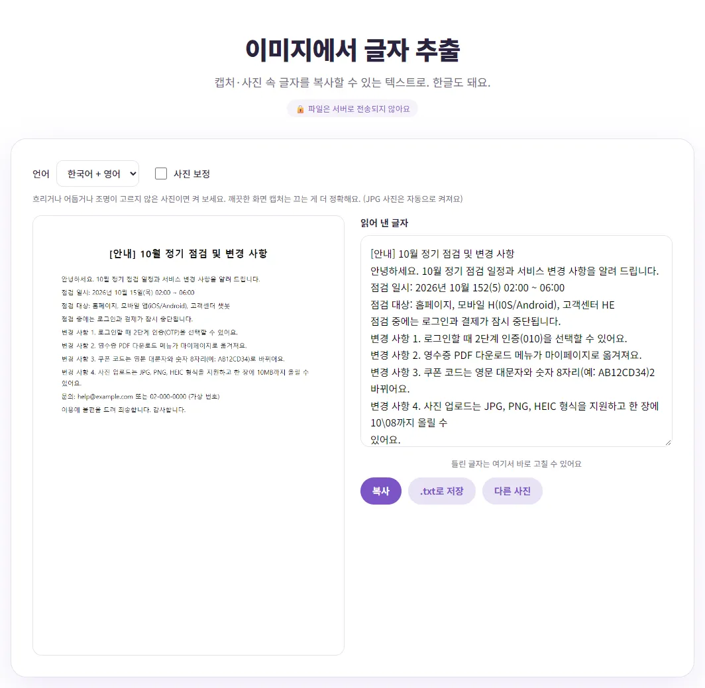
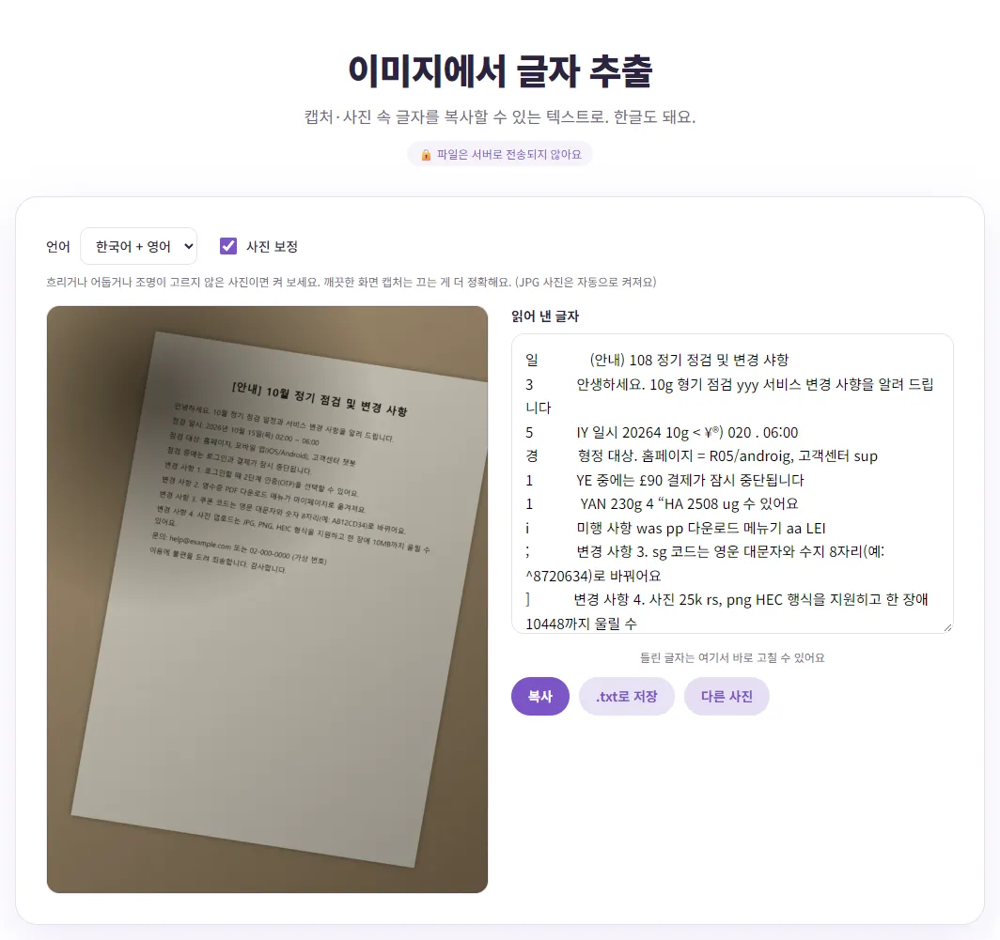

사진이나 캡처 속 글자, 다시 치지 않고 복사하는 법
안내문 사진이나 캡처 속 긴 문장을 한 글자씩 다시 치고 있었다면, 글자 인식(OCR)으로 시간을 크게 줄일 수 있어요. 다만 OCR은 완벽하지 않아서 사진 상태에 따라 결과가 크게 달라져요. 직접 만든 샘플로 정확도를 재 본 숫자와 함께, 잘 읽히게 하는 법과 결과를 빨리 고치는 법을 알려 드릴게요.
OCR이 뭐고, 벤토툴은 어떻게 읽나요?
OCR은 사진 속 글자 모양을 보고 어떤 글자인지 추측해서 텍스트로 바꾸는 기술이에요. 벤토툴 이미지 글자 추출은 공개된 OCR 엔진(Tesseract)을 브라우저 안에서 돌려요. 처음 한 번은 인식 프로그램과 언어 데이터를 인터넷에서 내려받지만, 내 사진은 어디로도 보내지 않고 내 컴퓨터 안에서 읽어요. 신분증이나 계약서처럼 개인정보가 있는 사진도 부담이 덜한 이유예요.
쓰는 법은 간단해요. 언어를 고르고(기본은 한국어 + 영어), 사진을 올리거나 캡처한 화면을 Ctrl+V로 붙여 넣으면 오른쪽 칸에 읽어 낸 글자가 나와요. 그 칸에서 바로 고친 뒤 '복사'하거나 '.txt로 저장'하면 끝이에요. 지금은 이미지 파일만 받기 때문에, PDF라면 PDF JPG 변환으로 쪽을 그림으로 바꿔서 올려야 해요.
직접 재 본 정확도
한국어와 영문 약어·숫자·이메일이 섞인 가상 공지문을 직접 만들어, 화면 캡처와 휴대폰으로 찍은 듯한 사진 두 가지로 읽혀 봤어요. 정확도는 띄어쓰기를 뺀 원문 글자 중 몇 %가 맞게 나왔는지로 계산했어요.
| 사진 상태 | 설정 | 정확도 |
|---|---|---|
| 화면 캡처 (PNG) | 한국어 + 영어, 사진 보정 끔 | 95.8% |
| 화면 캡처 (PNG) | 한국어 + 영어, 사진 보정 켬 | 91.4% |
| 화면 캡처 (PNG) | 한국어만 | 84.5% |
| 고른 빛에서 정면으로 찍은 사진 (JPG) | 사진 보정 켬 (자동) | 94.9% |
| 고른 빛에서 정면으로 찍은 사진 (JPG) | 사진 보정 끔 | 93.5% |
| 그림자 지고 기울어진 사진 (JPG) | 사진 보정 켬 (자동) | 53.3% |
| 그림자 지고 기울어진 사진 (JPG) | 사진 보정 끔 | 37.8% |

또렷한 캡처와 잘 찍은 사진은 95% 안팎으로 꽤 잘 읽었어요. 한 장 읽는 데는 1~3초쯤 걸렸어요. 반면 그림자가 지고 비스듬한 사진은 절반 정도만 맞았어요. 결과를 고치는 시간까지 생각하면, 사진이 나쁠 때는 다시 찍는 게 더 빨라요.
표가 있는 문서에서는 더 조심해야 해요. 표가 들어간 가상 제품 소개서 캡처를 읽혔더니 표 안의 글자가 통째로 빠져서 정확도가 50.4%에 그쳤고, 사진 보정을 켜자 표 일부가 살아나 70.4%가 됐어요. 표는 칸별로 잘라서 올리거나, 결과에서 빠진 줄이 없는지 꼭 확인하세요.
잘 읽히는 사진의 조건
- 글자가 크고 반듯하게: 화면에서 글자가 작으면 확대해서 캡처하세요. 사진이라면 종이와 휴대폰을 나란하게 두고 정면에서 찍어요.
- 필요한 부분만: 여러 단으로 된 글, 표, 그림이 섞여 있으면 읽는 순서가 꼬이기 쉬워요. 이미지 자르기로 필요한 문단만 남기면 정확도가 올라가요.
- 그림자와 반사 없이: 그림자가 진 부분은 글자가 배경에 묻혀 엉뚱한 글자로 바뀌어요. 찍는 요령은 서류 사진을 PDF로 만드는 법에 정리해 두었어요.
- 손글씨·무늬 배경은 기대를 낮게: 이번 엔진은 인쇄된 글자에 맞춰져 있어서 손글씨나 무늬 위 글자는 많이 틀려요.
'사진 보정'은 언제 켜나요?
'사진 보정'을 켜면 사진을 흑백으로 바꾸고, 주변보다 어두운 부분만 글자로 남겨서 조명이 고르지 않은 사진을 또렷하게 만든 뒤 읽어요. JPG 사진을 올리면 자동으로 켜지고, PNG 캡처는 꺼진 채로 시작해요.
측정 결과도 이 기본값과 맞았어요. 깨끗한 캡처는 켜면 오히려 95.8%에서 91.4%로 떨어졌고, 그림자 진 사진은 켜야 37.8%에서 53.3%로 올라갔어요. 결과가 이상하면 체크를 한 번 바꿔 보세요. 체크를 바꾸면 같은 사진을 바로 다시 읽어서 비교가 쉬워요.

한글·영문 섞인 글에서 자주 틀리는 것
테스트에서 틀린 곳을 모아 보면 패턴이 보여요. 결과를 검토할 때 이런 곳부터 보면 빨라요.
| 원문 | 읽힌 결과 | 왜 틀렸을까 |
|---|---|---|
| OTP | 010 | 영문 O와 숫자 0, 대문자 T와 숫자 1처럼 모양이 비슷한 글자 |
| iOS | I0S, i0S | 소문자 i·대문자 I, 영문 O·숫자 0 혼동 |
| 10MB | 10\08, 10\48 | 붙어 있는 영문 약어를 기호와 숫자로 착각 |
| 앱, 챗봇 | H, HE | 영문 옆 짧은 한글 단어를 영문으로 읽음 |
| (목) | (5) | 괄호 속 한 글자는 앞뒤 단서가 적어 틀리기 쉬움 |
'한국어만'으로 바꾸면 영문 약어가 대부분 깨졌어요(JPG, PNG, 이메일 주소 등). 반대로 영어만 있는 글이라면 '영어만'이 나아요. 섞여 있으면 기본값인 '한국어 + 영어'를 쓰세요. 이름, 날짜, 금액, 계좌번호, 쿠폰 코드처럼 한 글자만 틀려도 문제가 되는 부분은 반드시 원본과 한 글자씩 대조하세요.
결과를 빨리 고쳐 쓰는 요령
- 결과 칸에서 바로 고치세요. 줄바꿈은 사진 속 줄 모양대로 나오니, 문단을 이어 붙일 곳의 줄바꿈부터 지우면 정리가 빨라요.
- 위 표의 '자주 틀리는 것'을 중심으로 영문·숫자 부분만 원본과 비교해요.
- 긴 글이라면 '.txt로 저장'한 뒤 문서 프로그램의 맞춤법 검사를 한 번 돌리면 한글 오타를 더 찾을 수 있어요.
- 글자 수 제한이 있는 곳에 붙일 거라면 글자 수 세기로 바로 확인해 보세요.
휴대폰 기본 기능과 비교
휴대폰에도 사진 속 글자를 복사하는 기능이 들어 있어요. 공식 안내에서 확인한 내용은 이래요.
| 기능 | 공식 안내 내용 |
|---|---|
| 아이폰 라이브 텍스트 | iPhone XS·XR 이후 모델, iOS 15 이상. 사진 앱에서 단어를 길게 터치하고 핀으로 범위를 맞춘 뒤 '복사'(전체는 '모두 선택'). 애플 기능 지원 페이지에 한국어가 지원 언어로 나와 있어요 |
| 구글 렌즈 (구글 포토) | 구글 포토에서 사진 선택 → 더보기 → Google 렌즈 → 복사할 단어를 탭해서 선택 |
사진이 휴대폰에 있고 몇 줄만 필요하다면 휴대폰 기능이 가장 빨라요. PC에서 캡처한 화면이나 PC에 저장된 사진을 읽을 때, 결과를 바로 고쳐서 .txt로 저장하고 싶을 때, 사진을 외부로 보내지 않고 처리하고 싶을 때는 벤토툴이 편해요. 어느 쪽이든 결과는 꼭 한 번 읽어 보고 쓰세요.
참고한 자료
- Apple 지원 - iPhone 또는 iPad에서 사진 속 텍스트 복사 및 번역하기
- Apple - iOS 및 iPadOS 기능 사용 가능 여부 (라이브 텍스트 지원 언어)
- Google 포토 고객센터 - 사진 및 주변 사물 정보 확인하기
글에서 소개한 도구, 회원가입 없이 바로 써 보세요.
🔤 이미지 글자 추출 (OCR) 바로 쓰기